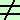

esercizio
data l'equazione
kx2 -kx + k + 2 = 0
trovare il valore di k affinche'
la somma dei quadrati degli inversi delle radici valga 4
significa che
| 1 |
|
1 |
|
| ----- |
+ |
----- |
= 4 |
| x12 |
|
x22 |
|
faccio il m.c.m. prima dell'uguale
| x22 + x12 |
|
| ---------------- |
= 4 |
| x12x22 |
|
sopra aggiungo e tolgo il doppio prodotto 2x1x2 per farlo diventare un quadrato, sotto posso considerarlo come quadrato del prodotto
| x12 + x22 + 2x1x2 - 2x1x2 |
|
| ---------------------------------- |
= 4 |
| (x1 x2)2 |
|
| (x1 + x2)2 - 2x1x2 |
|
| --------------------------- |
= 4 |
| (x1 x2)2 |
|
abbiamo
a = k
b = - k
c = k+2
quindi la somma
| b |
|
- k |
|
| - ----- = |
x1 + x2 = |
- ---------- |
| a |
|
k |
mi da' la relazione
x1 + x2 = 1
il prodotto vale
| c |
|
k + 2 |
|
| ----- = |
x1 · x2 = |
---------- |
| a |
|
k |
Sostituendo ottengo
|
k+2 |
| (1)2 - |
2 ------------ |
|
k |
|
|
| --------------------------- |
= 4 |
|
|
|
2k + 4 |
|
(k + 2)2 |
| 1 - |
------------ |
= 4 |
------------- |
|
k |
|
k2 |
|
k -2k - 4 |
|
4(k2 +
4k + 4) |
|
-------------- |
= |
------------------------- |
|
k |
|
k2 |
|
-k - 4 |
|
4k2 +
16k + 16 |
|
-------------- |
= |
------------------------- |
|
k |
|
k2 |
faccio il m.c.m.
|
- k2 -
4k |
|
4k2 +16k
+ 16 |
|
------------ |
= |
------------------------ |
|
k2 |
|
k2 |
elimino i denominatori supponendo k0
k2 - 4k = 4k2 + 16k + 16
-5k2 - 20k - 16 = 0
cambio segno
5k2 + 20k + 16 = 0
calcoli
ottengo le due soluzioni
|
-10  2 2 5 5 |
| k = |
--------------------- |
|
5 |
|